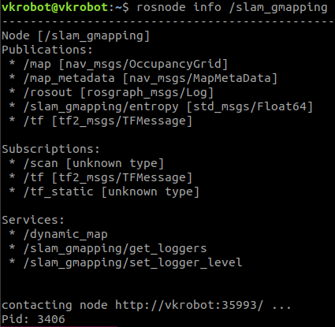
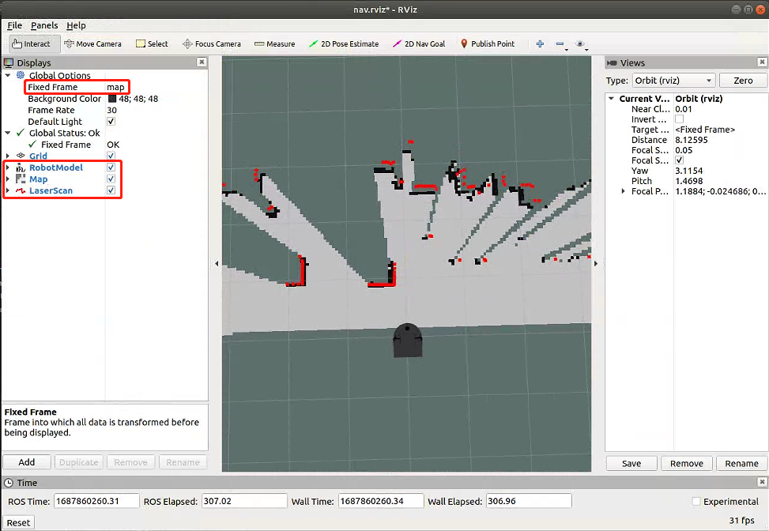
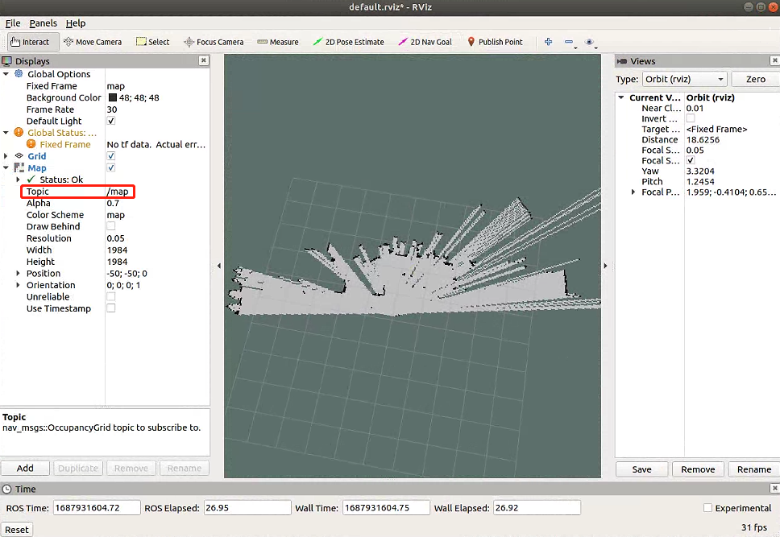
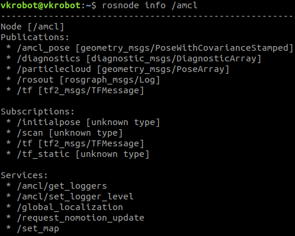
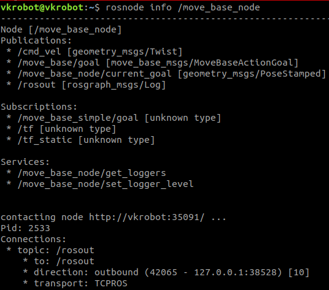
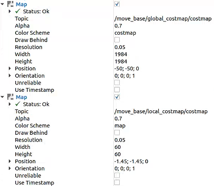
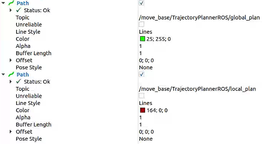

6 移动机器人SLAM与导航
现实生活中，当我们需要到某目的地时，可能会需要一张全局地图，首先通过地图判断自己当前的位置，目的地的位置，同时根据地图来规划一条大致的路线。在前往目的地的途中，还需要判断周围的环境，例如当遇到修路等情况时，可能需要临时变更行进路线......
对机器人的导航而言，也是如此，根据上述的情形我们可以提炼出导航需要的几个技术点：
- 全局地图
- 自身定位
- 路径规划
- 运动控制
- 环境感知
其中，全局地图的使用涉及地图的绘制，目前主流的地图绘制技术为SLAM（Simultaneous Localization And Mapping）——即时定位与地图构建，在ROS中，较为常用的SLAM算法有：gmapping、cartographer、hector_slam、rgbdslam、ORB_SLAM等，本教程选用gmapping算法来实现SLAM。
准备工作
安装相关的ROS功能包：
- gmapping：
sudo apt install ros-melodic-gmapping - map_server：
sudo apt install ros-melodic-map-server - navigation：
sudo apt install ros-melodic-navigation
新建功能包并导入依赖：
catkin_create_pkg learning_nav gmapping map_server amcl move_base vkbot_description ydlidar vkbot_bringup vkbot_teleop
6.1 SLAM包的使用
 ：
：6.1.1 gmapping
gmapping是较为常用且成熟的SLAM算法之一，它可以根据机器人的里程计数据与激光雷达数据来绘制二维栅格地图，因此gmapping对硬件有一定的要求：
- 机器人可以发布里程计消息
- 机器人可以发布雷达消息
6.1.1.1 gmapping功能包
gmapping功能包中的核心节点是：slam_gmapping。关于该节点我们需要重点关注它订阅的话题、发布的话题、提供的服务以及相关参数

订阅的话题
- scan (sensor_msgs/LaserScan)：SLAM所需的雷达数据
- tf (tf2_msgs/TFMessage)：用于底盘、里程计和雷达之间的坐标变换消息
发布的话题
- map (nav_msgs/OccupancyGrid)：地图栅格数据，用于在rviz中显示地图
- map_metadata (nav_msgs/MapMetaData)：地图元数据，包含了地图的宽度、高度、分辨率等
- ~entrop (std_msgs/Float64)：机器人姿态分布熵估计，值越大则不确定性越大
提供的服务
- dynamic_map (nav_msgs/GetMap)：用于获取地图数据
参数
- ~base_frame (string, default: "base_link")：机器人基坐标系
- ~map_frame (string, default: "map")：地图坐标系
- ~odom_frame (string, default: "odom")：里程计坐标系
- ~map_update_interval (float, default: 5.0)：地图更新频率
- ~maxUrange (float, default: 80.0)：激光雷达数据最大可用范围，超出此范围的激光数据将被截断
- ~maxRange(float)：传感器的最大范围，一般设置为 maxUrange < 传感器实际探测的最大范围 <= maxRange
......
参数较多，此处仅罗列出常用参数，其余参数可参考官网文档：gmapping - ROS Wiki
运行节点必须的坐标变换
- 激光雷达坐标系(scans) ---> 基坐标系(base_link)：一般由robot_state_publisher发布，或 使用 tf 工具 static transform_publisher 发布
- 基坐标系(base_link) ---> 里程计坐标系(odom)：一般由里程计节点发布
节点发布的 TF 变换
- 地图坐标系(map) ---> 里程计坐标系(odom)
6.1.1.2 gmapping节点的配置
使用 launch 文件启动节点并配置参数
slam.launch
<launch>
<node pkg="gmapping" type="slam_gmapping" name="slam_gmapping" output="screen">
<!--雷达话题-->
<remap from="scan" to="scan"/>
<!--底盘坐标系-->
<param name="base_frame" value="base_footprint"/>
<!--里程计坐标系-->
<param name="odom_frame" value="odom"/>
<!--地图更新频率，可以根据硬件条件适当调整，单位：s-->
<param name="map_update_interval" value="1.0"/>
<param name="maxUrange" value="8.0"/>
<param name="maxRange" value="10.0"/>
<param name="sigma" value="0.05"/>
<param name="kernelSize" value="3"/>
<param name="lstep" value="0.05"/>
<param name="astep" value="0.05"/>
<param name="iterations" value="5"/>
<param name="lsigma" value="0.075"/>
<param name="ogain" value="3.0"/>
<param name="lskip" value="0"/>
<param name="minimumScore" value="30"/>
<param name="srr" value="0.01"/>
<param name="srt" value="0.02"/>
<param name="str" value="0.01"/>
<param name="stt" value="0.02"/>
<param name="linearUpdate" value="0.05"/>
<param name="angularUpdate" value="0.436"/>
<param name="temporalUpdate" value="-1.0"/>
<param name="resampleThreshold" value="0.5"/>
<param name="particles" value="50"/>
<param name="xmin" value="-1.0"/>
<param name="ymin" value="-1.0"/>
<param name="xmax" value="1.0"/>
<param name="ymax" value="1.0"/>
<param name="delta" value="0.05"/>
<param name="llsamplerange" value="0.01"/>
<param name="llsamplestep" value="0.01"/>
<param name="lasamplerange" value="0.005"/>
<param name="lasamplestep" value="0.005"/>
</node>
</launch>
start_slam.launch
<launch>
<include file="$(find 功能包)/launch/slam.launch" />
<include file="$(find vkbot_bringup)/launch/minimal.launch" />
<include file="$(find ydlidar)/launch/ydlidar1_up.launch" />
<include file="$(find vkbot_navigation)/launch/velocity_smoother.launch.xml" />
<include file="$(find vkbot_navigation)/launch/safety_controller.launch.xml" />
<include file="$(find vkbot_teleop)/launch/key_board_teleop.launch" />
<node pkg="joint_state_publisher" name="joint_state_publisher" type="joint_state_publisher" />
<node pkg="robot_state_publisher" name="robot_state_publisher" type="robot_state_publisher" />
<!-- 可以保存 rviz 配置并后期直接使用-->
<node pkg="rviz" type="rviz" name="rviz" args="-d $(find 功能包)/config/slam.rviz"/>
</launch>
rviz设置

- 设置Fixed Frame为map
- 添加插件并订阅话题，包括：RobotModel、Map、LaserScan
现在你可以试着用键盘控制设备移动，从而绘制地图啦！
6.1.2 map_server
slam_gmapping节点发布了地图数据，但是数据仅仅保存在内存中，当节点关闭时地图数据也会被一并释放，因此我们需要将地图数据保存到磁盘中便于后续的使用，map_server 功能包提供了两个节点：map_saver 和 map_server，前者用于地图保存，后者用于加载地图数据到 ROS 参数服务器中
map_saver：此节点订阅了 map 话题，用于生成地图文件
使用launch文件启动此节点并配置参数
map_saver.launch
<launch>
<arg name="filename" value="$(find 功能包)/保存路径/my_map" />
<node pkg="map_server" type="map_saver" name="map_saver" args="-f $(arg filename)" />
</launch>
slam_gmapping节点地图绘制完成后，运行此 launch 文件即可保存地图，指定路径下会生成两个文件：my_map.pgm及my_map.yaml，.pgm是一张地图的图片，可用图片查看程序打开，.yaml中保存的是地图的描述信息，包括地图宽度、高度、分辨率等
map_server：此节点会发布地图数据
使用launch文件启动此节点，加载地图描述文件（yaml）并发布
map_server.launch
<launch>
<!-- 地图描述文件(yaml) -->
<arg name="map" default="my_map.yaml" />
<!-- 运行map_server节点并加载地图 -->
<node pkg="map_server" type="map_server" name="map_server" args="$(find 功能包)/保存路径/$(arg map)" />
<node pkg="rviz" type="rviz" name="rviz" />
</launch>
在 rviz 中加载 map 组件，订阅 /map 话题即可显示二维栅格地图

6.2 导航

机器人是如何实现导航的呢？ROS官方提供了一张导航功能包集的图示，下图中囊括了ROS导航涉及的关键技术

上图各部分含义如下：
- 白色部分：必须且已实现的组件
- 灰色部分：可选且已实现的组件
- 蓝色部分：必须但未实现的组件
根据图示可总结出导航涉及的关键技术有以下五点：
- 全局地图
- 自身定位
- 路径规划
- 运动控制
- 环境感知
其中，全局地图一般通过map_server节点发布SLAM构建好的地图信息，在6.1中已详细介绍，运动控制与环境感知为机器人平台已实现功能。因此接下来重点介绍自身定位与路径规划。
6.2.1 自身定位
在导航开始与执行过程中，机器人都需要确定当前自身的位置，例如SLAM就可以实现自身定位，除此之外，ROS官方还提供了一个用于定位的功能包：amcl
AMCL（Adaptive Monte Carlo Localization）自适应蒙塔卡罗定位，是用于2D移动机器人的概率定位系统，amcl已经集成到了navigation包中。
6.2.1.1 amcl功能包
amcl功能包中的核心节点是：amcl。为了方便调用，需要先了解该节点订阅与发布的话题、提供的服务及相关参数。

订阅的话题
- initialpose(geometry_msgs/PoseWithCovarianceStamped)：用来初始化粒子滤波器的均值和协方差
- scan(sensor_msgs/LaserScan)：激光雷达数据
- tf(tf2_msgs/TFMessage)：坐标变换消息
- map(nav_msgs/OccupancyGrid)：设置
use_map_topic参数后，AMCL将订阅此话题以检索用于定位的地图
发布的话题
- amcl_pose(geometry_msgs/PoseWithCovarianceStamped)：机器人在地图中的位姿估计
- particlecloud(geometry_msgs/PoseArray)：位姿估计集合，rviz中可以使用PoseArray插件图形化显示
- tf(tf2_msgs/TFMessage)：odom到map的坐标变换消息
提供的服务
- global_localization(std_srvs/Empty)：初始化全局定位
- request_nomotion_update(std_srvs/Empty)：手动执行更新和发布更新粒子的服务
- set_map(nav_msgs/SetMap)：手动设置新地图和姿态的服务
调用的服务
- static_map(nav_msgs/GetMap)：调用此服务获取地图数据
参数
- ~base_frame_id(string, default:"base_link")：机器人基坐标系
-
~odom_frame_id(string, default:"odom")：里程计坐标系
-
~odom_model_type(string, default:"diff")：里程计模型，"diff"->差速、"omni"->全向轮、"diff-corrected"、"omni-corrected"
- ~global_frame_id(string, default:"map")：地图坐标系
以上为常用参数，其余参数参考：amcl - ROS Wiki
坐标变换
里程计本身也可以协助机器人进行定位，不过里程计存在累计误差，会出现定位错误的情况，amcl可以通过估算机器人在地图坐标系下的姿态，再结合里程计定位从而提高定位的精确度。

6.2.1.2 amcl节点的配置
使用 launch 文件启动节点并配置参数
amcl.launch
<launch>
<node pkg="amcl" type="amcl" name="amcl" output="screen">
<!-- 里程计模式为差分 -->
<param name="odom_model_type" value="diff"/>
<!-- 里程计坐标系 -->
<param name="odom_frame_id" value="odom"/>
<!-- 机器人基坐标系 -->
<param name="base_frame_id" value="base_footprint"/>
<!-- 地图坐标系 -->
<param name="global_frame_id" value="map"/>
<!-- Publish scans from best pose at a max of 10 Hz -->
<param name="odom_alpha5" value="0.1"/>
<param name="gui_publish_rate" value="10.0"/>
<param name="laser_max_beams" value="60"/>
<param name="laser_max_range" value="12.0"/>
<param name="min_particles" value="500"/>
<param name="max_particles" value="2000"/>
<param name="kld_err" value="0.05"/>
<param name="kld_z" value="0.99"/>
<param name="odom_alpha1" value="0.2"/>
<param name="odom_alpha2" value="0.2"/>
<!-- translation std dev, m -->
<param name="odom_alpha3" value="0.2"/>
<param name="odom_alpha4" value="0.2"/>
<param name="laser_z_hit" value="0.5"/>
<param name="laser_z_short" value="0.05"/>
<param name="laser_z_max" value="0.05"/>
<param name="laser_z_rand" value="0.5"/>
<param name="laser_sigma_hit" value="0.2"/>
<param name="laser_lambda_short" value="0.1"/>
<param name="laser_model_type" value="likelihood_field"/>
<param name="laser_likelihood_max_dist" value="2.0"/>
<param name="update_min_d" value="0.25"/>
<param name="update_min_a" value="0.2"/>
<param name="resample_interval" value="1"/>
<param name="transform_tolerance" value="1.0"/>
<param name="recovery_alpha_slow" value="0.0"/>
<param name="recovery_alpha_fast" value="0.0"/>
</node>
</launch>
amcl节点不能独立运行，需先加载全局地图，再启动rviz显示定位结果，以上步骤可集成到launch文件中
start_amcl.launch
<launch>
<!-- 设置地图的配置文件 -->
<arg name="map" default="my_map.yaml" />
<!-- 运行地图服务器，并且加载设置的地图-->
<node name="map_server" pkg="map_server" type="map_server" args="$(find 功能包名)/保存路径/$(arg map)"/>
<!-- 启动AMCL节点 -->
<include file="$(find 功能包名)/保存路径/amcl.launch" />
<include file="$(find vkbot_bringup)/launch/minimal.launch" />
<include file="$(find ydlidar)/launch/ydlidar1_up.launch" />
<include file="$(find vkbot_navigation)/launch/velocity_smoother.launch.xml" />
<include file="$(find vkbot_navigation)/launch/safety_controller.launch.xml" />
<include file="$(find vkbot_teleop)/launch/key_board_teleop.launch" />
<node pkg="joint_state_publisher" name="joint_state_publisher" type="joint_state_publisher" />
<node pkg="robot_state_publisher" name="robot_state_publisher" type="robot_state_publisher" />
<!-- 可以保存 rviz 配置并后期直接使用-->
<node pkg="rviz" type="rviz" name="rviz" args="-d $(find 功能包)/config/amcl.rviz"/>
</launch>
launch文件中地图服务节点和amcl节点中的包名、文件名需要根据自己的设置修改
在启动的 rviz 中，添加RobotModel、Map插件，分别显示机器人模型与地图，添加 PoseArray 插件，设置话题为particlecloud来显示 amcl 预估的当前机器人位姿，箭头越是密集，说明当前机器人处于此位置的概率越高。通过键盘控制机器人运动，会发现 PoseArray 也随之而改变
6.2.2 路径规划
路径规划是导航中的核心功能之一，在ROS的导航功能包集navigation中提供了move_base功能包，用于实现路径规划功能。
6.2.2.1 move_base功能包
move_base功能包的核心节点是：move_base。为了方便调用，需要先了解该节点的相关内容。

动作（Action）订阅的话题
- move_base/goal(move_base_msgs/MoveBaseActionGoal)：move_base运动规划目标
- move_base/cancel(actionlib_msgs/GoalID)：取消目标
动作（Action）发布的话题
- move_base/feedback(move_base_msgs/MoveBaseActionFeedback)：连续反馈信息，包含机器人的基坐标系在当前世界坐标系中的位置
- move_base/status(actionlib_msgs/GoalStatusArray)：提供有关发送到move_base的目标状态信息
- move_base/result(move_base_msgs/MoveBaseActionResult)：move_base操作的结果为空
订阅的话题
- move_base_simple/goal(geometry_msgs/PoseStamped)：运动规划目标（无连续反馈）
发布的话题
- cmd_vel(geometry_msgs/Twist)：输出到机器人底盘的运动控制消息
服务
- ~make_plan(nav_msgs/GetPlan)：请求该服务，可以获取到给定目标的规划路径，但是不执行该路径规划
- ~clear_unknown_space(std_srvs/Empty)：清除机器人周围的未知空间
- ~clear_costmaps(std_srvs/Empty)：清除代价地图中的障碍物，可能会导致机器人与障碍物发生碰撞，慎用
参数
 ：请参考
：请参考6.2.2.2 代价地图
概念
机器人导航是依赖于地图的，地图在SLAM时已经介绍，但SLAM所构建的地图在导航中是不能直接使用的，因为：
- SLAM构建的地图是静态的，在导航过程中障碍物信息是可变的，因此导航过程中需要实时获取障碍物信息
- 在靠近障碍物边缘时，虽然此时还未发生碰撞，但是由于机器人本体存在惯性或形体不规则的情况，转弯时还是有可能与障碍物产生碰撞的，安全起见最好在障碍物的边缘设置膨胀区域，尽可能避免机器人进入此区域
因此，导航时需要在静态地图的基础上增加辅助信息：实时更新障碍物信息、基于静态地图设置膨胀区，三者共同构成了代价地图
代价地图组成
代价地图分为：global_costmap（全局代价地图）和local_costmap（本地代价地图），前者用于全局路径规划，后者用于本地路径规划（动态避障）。一张代价地图包含以下层级：
- Static Map Layer：静态地图层，由SLAM构建的静态地图
- Obstacle Map Layer：障碍物层，由传感器动态感知的障碍物信息
- Inflation Layer：膨胀层，在以上两层地图上进行膨胀，以避免机器人与障碍物碰撞
- Other Layers：其余自定义的costmap
多个层可以按需自由搭配
碰撞算法
在ROS中是如何计算代价值的呢，官方给出了下图辅助理解：

横轴表示距离机器人中心的距离，纵轴表示代价地图中栅格的灰度值
- 致命障碍：栅格值为254，此时障碍物与机器人中心重叠，必然产生碰撞
- 内切障碍：栅格值为253，此时障碍物处于机器人的内切圆中，必然产生碰撞
- 外切障碍：栅格值为[128, 252]，此时障碍物处于机器人的外切圆与内切圆之间，处于碰撞临界状态，可能产生碰撞
- 非自由空间：栅格值为(0, 127]，此时机器人处于障碍物附近，属于危险警戒区域，机器人进入此区域，将来可能会产生碰撞
- 自由空间：栅格值为0，此处机器人可自由通行
- 未知区域：栅格值为255，表示还未探明是否有障碍物的区域
设置膨胀层时可参考非自由空间
导航参数配置
使用launch文件启动move_base节点，并加载参数配置文件
move_base.launch
<launch>
<node pkg="move_base" type="move_base" name="move_base" respawn="true" output="screen" clear_params="true">
<rosparam file="$(find 功能包名)/param/move_base_params.yaml" command="load" />
<rosparam file="$(find 功能包名)/param/costmap_common_params.yaml" command="load" ns="global_costmap" />
<rosparam file="$(find 功能包名)/param/costmap_common_params.yaml" command="load" ns="local_costmap" />
<rosparam file="$(find 功能包名)/param/global_costmap_params.yaml" command="load" />
<rosparam file="$(find 功能包名)/param/local_costmap_params.yaml" command="load" />
<rosparam file="$(find 功能包名)/param/base_global_planner_params.yaml" command="load" />
<rosparam file="$(find 功能包名)/param/teb_local_planner_params.yaml" command="load" />
<remap from="cmd_vel" to="/cmd_vel_mux/input/navi" />
</node>
</launch>
这个launch文件启动了move_base节点，"respawn"设置为true表示此节点关闭后会被重启，"clear_params"设置为true表示每次启动此节点都需要清空私有参数并重新载入
配置文件
move_base_params.yaml：move_base节点配置参数
shutdown_costmaps: false
controller_frequency: 4.0
controller_patience: 3.0 # 3.0
planner_frequency: 1.0
planner_patience: 3.0
oscillation_timeout: 5.0
oscillation_distance: 0.2
# Planner selection
base_global_planner: "global_planner/GlobalPlanner"
base_local_planner: "teb_local_planner/TebLocalPlannerROS"
max_planning_retries: 1
recovery_behavior_enabled: true
clearing_rotation_allowed: true
useMagnetometer: False
auto_update_: False
particle_range: 1.0
angle_tolerance: 0.05
recovery_behaviors:
#- name: 'conservative_reset'
# type: 'clear_costmap_recovery/ClearCostmapRecovery'
- name: 'aggressive_reset'
type: 'clear_costmap_recovery/ClearCostmapRecovery'
#- name: 'super_reset'
# type: 'clear_costmap_recovery/ClearCostmapRecovery'
- name: 'clearing_rotation'
type: 'rotate_recovery/RotateRecovery'
#- name: 'move_slow_and_clear'
#type: 'move_slow_and_clear/MoveSlowAndClear'
conservative_reset:
reset_distance: 3.0
#layer_names: [static_layer, obstacle_layer, inflation_layer]
layer_names: [obstacle_layer]
aggressive_reset:
reset_distance: 0.3
#layer_names: [static_layer, obstacle_layer, inflation_layer]
layer_names: [obstacle_layer]
super_reset:
reset_distance: 5.0
#layer_names: [static_layer, obstacle_layer, inflation_layer]
layer_names: [obstacle_layer]
move_slow_and_clear:
clearing_distance: 0.5
limited_trans_speed: 0.1
limited_rot_speed: 0.4
limited_distance: 0.3
costmap_common_params.yaml：全局代价地图与本地代价地图的通用参数
robot_radius: 0.23
obstacle_layer:
enabled: true
max_obstacle_height: 0.6
min_obstacle_height: 0.0
obstacle_range: 2.0
raytrace_range: 5.0
inflation_radius: 0.25
combination_method: 1
observation_sources: laser_scan_sensor
track_unknown_space: true
laser_scan_sensor: {data_type: LaserScan, topic: /scan, marking: true, clearing: true, expected_update_rate: 0}
track_unknown_space: true
inflation_layer:
enabled: true
cost_scaling_factor: 10.0 # exponential rate at which the obstacle cost drops off (default: 10)
# inflation_radius: 0.25 # max. distance from an obstacle at which costs are incurred for planning paths.
static_layer:
enabled: true
map_topic: "/map"
global_costmap_params.yaml：全局代价地图参数
global_costmap:
global_frame: /map
robot_base_frame: /base_footprint
update_frequency: 1.0
publish_frequency: 0
static_map: true
rolling_window: false
resolution: 0.05
transform_tolerance: 1.0
map_type: costmap
inflation_radius: 0.3
GlobalPlanner:
allow_unknown: true
local_costmap_params.yaml：本地代价地图参数
local_costmap:
global_frame: /odom_combined
robot_base_frame: /base_footprint
update_frequency: 5.0 #3.0
publish_frequency: 2.0 #1.0
static_map: false
rolling_window: true
width: 3.0
height: 3.0
resolution: 0.05
transform_tolerance: 1.0
map_type: costmap
inflation_radius: 0.25
plugins:
- {name: static_layer, type: "costmap_2d::StaticLayer"}
- {name: obstacle_layer, type: "costmap_2d::ObstacleLayer"}
- {name: inflation_layer, type: 'costmap_2d::InflationLayer'}
base_global_planner_params：全局路径规划器参数配置
GlobalPlanner:
old_navfn_behavior: false
use_quadratic: true
use_dijkstra: true
use_grid_path: false
allow_unknown: true
planner_window_x: 0.0
planner_window_y: 0.0
default_tolerance: 0.0
teb_local_planner_params.yaml：局部路径规划器参数配置
TebLocalPlannerROS:
odom_topic: odom
map_frame: /odom
# Trajectory
teb_autosize: True
dt_ref: 0.45
dt_hysteresis: 0.1
global_plan_overwrite_orientation: True
max_global_plan_lookahead_dist: 3.0
feasibility_check_no_poses: 5
# Robot
max_vel_x: 0.4
max_vel_x_backwards: 0.15
max_vel_theta: 1.0
acc_lim_x: 0.3
acc_lim_theta: 0.3
min_turning_radius: 0
footprint_model: # types: "point", "circular", "two_circles", "line", "polygon"
radius: 0.23 # for type "circular"
# GoalTolerance
xy_goal_tolerance: 0.10
yaw_goal_tolerance: 0.2
free_goal_vel: False
# Obstacles
min_obstacle_dist: 0.3
include_costmap_obstacles: True
costmap_obstacles_behind_robot_dist: 1.0
obstacle_poses_affected: 7
costmap_converter_plugin: ""
costmap_converter_spin_thread: True
costmap_converter_rate: 5
# Optimization
no_inner_iterations: 5
no_outer_iterations: 4
optimization_activate: True
optimization_verbose: False
penalty_epsilon: 0.1
weight_max_vel_x: 2
weight_max_vel_theta: 1
weight_acc_lim_x: 1
weight_acc_lim_theta: 1
weight_kinematics_nh: 1000
weight_kinematics_forward_drive: 70
weight_kinematics_turning_radius: 1
weight_optimaltime: 1
weight_obstacle: 50
weight_dynamic_obstacle: 10 # not in use yet
selection_alternative_time_cost: False # not in use yet
# Homotopy Class Planner
enable_homotopy_class_planning: False
enable_multithreading: True
simple_exploration: False
max_number_classes: 4
roadmap_graph_no_samples: 15
roadmap_graph_area_width: 5
h_signature_prescaler: 0.5
h_signature_threshold: 0.1
obstacle_keypoint_offset: 0.1
obstacle_heading_threshold: 0.45
visualize_hc_graph: False
6.2.3 实战：真实机器人导航配置与调试
要实现导航，需要集成地图服务、amcl、move_base与rviz等节点：
navigation.launch
<launch>
<!-- 设置地图的配置文件 -->
<arg name="map" default="my_map.yaml" />
<!-- 运行地图服务器，并且加载设置的地图-->
<node name="map_server" pkg="map_server" type="map_server" args="$(find 功能包)/map/$(arg map)"/>
<!-- 启动AMCL节点 -->
<include file="$(find 功能包)/launch/amcl.launch" />
<!-- 运行move_base节点 -->
<include file="$(find 功能包)/launch/move_base.launch" />
<!-- 运行rviz -->
<node pkg="rviz" type="rviz" name="rviz" args="-d $(find 功能包)/rviz/nav.rviz" />
<include file="$(find vkbot_bringup)/launch/minimal.launch" />
<include file="$(find ydlidar)/launch/ydlidar1_up.launch" />
<include file="$(find vkbot_navigation)/launch/velocity_smoother.launch.xml" />
<include file="$(find vkbot_navigation)/launch/safety_controller.launch.xml" />
<node pkg="joint_state_publisher" name="joint_state_publisher" type="joint_state_publisher" />
<node pkg="robot_state_publisher" name="robot_state_publisher" type="robot_state_publisher" />
</launch>
运行
-
添加RVIZ插件（可保存配置，后期直接复用）
-
RobotModel：用于显示机器人模型
-
Map：用于显示地图、全局代价地图以及本地代价地图，代价地图的配置如下图：

- PoseArray：用于显示AMCL位姿估计集合
- Path：用于显示全局规划路径与本地规划路径，配置如下图：

- 通过RVIZ工具栏的2D Nav Goal设置导航目标
动态调参
参数服务器的数据被修改时，如果节点不重新访问，那么就不能获取修改后的数据，例如在修改小海龟仿真器背景颜色的案例中，需要调用/clear服务才能刷新背景颜色。而在一些特殊场景下，要求能做到动态获取参数，如导航参数的动态调试。
在ROS中针对这种场景已经给出了解决方案：dynamic_reconfigure动态参数配置。使用以下命令即可启动：
rosrun rqt_reconfigure rqt_reconfigure
练习——导航与SLAM建图
在介绍SLAM建图时，我们是通过键盘控制机器人移动实现建图的，而后续又介绍了机器人的自主导航，那么能不能将两者结合，实现机器人的自主移动并构建地图呢？
答案是可以的。并且实现过程较为简单，只需要通过launch文件集成SLAM与move_base节点，即可实现上述功能。